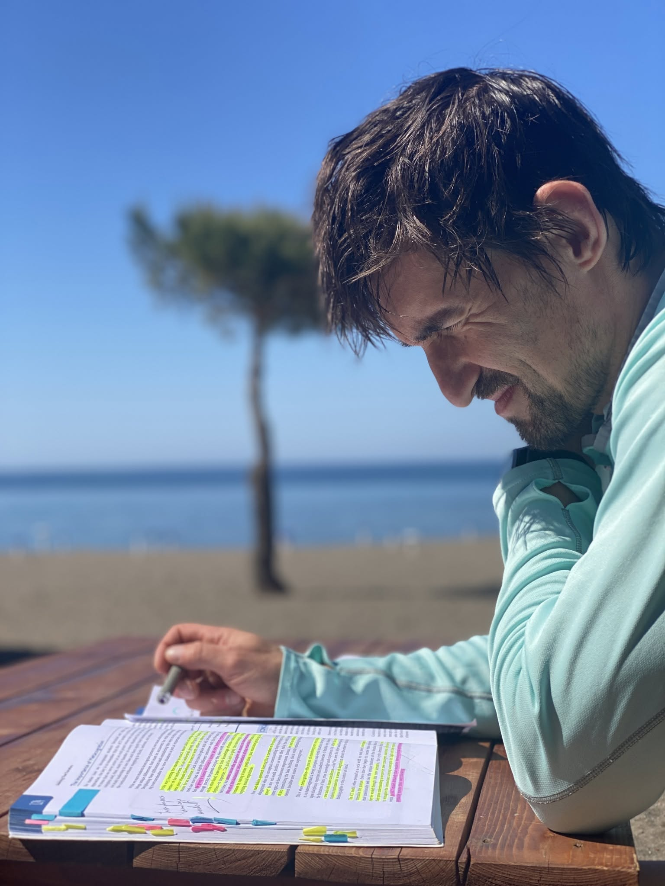
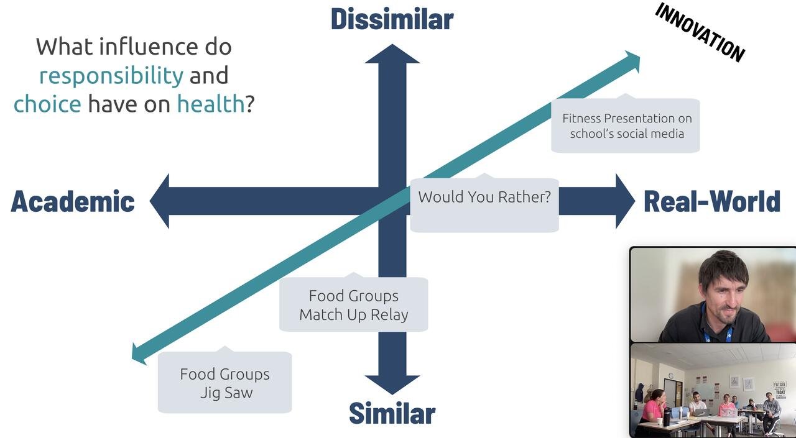
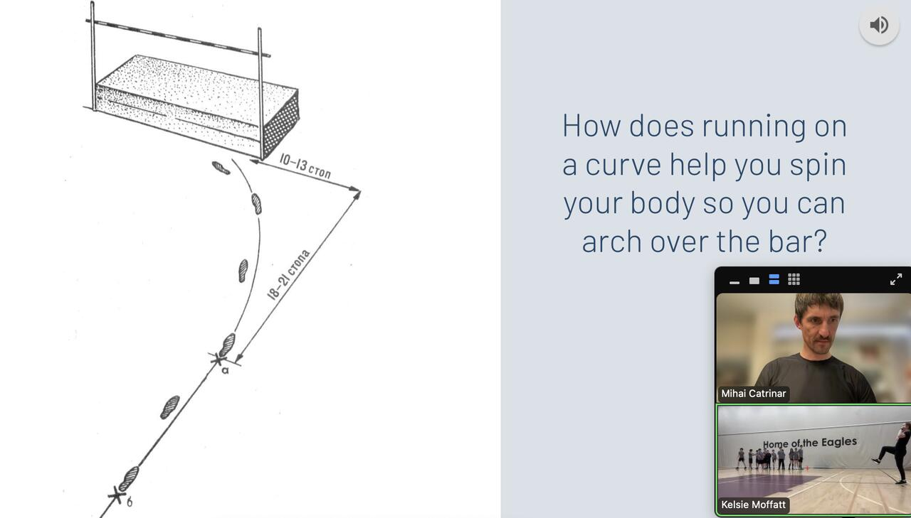
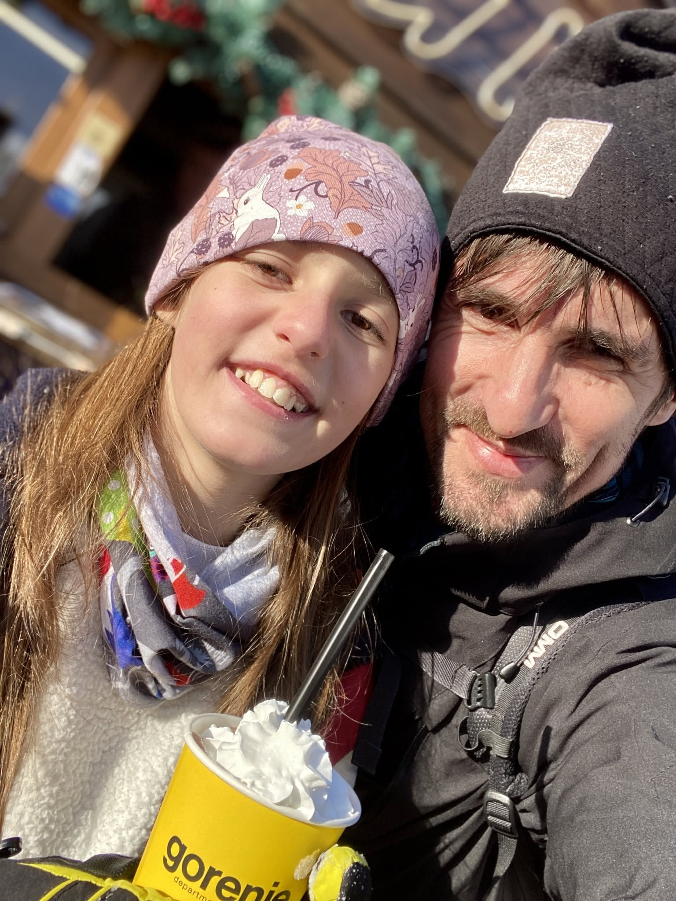
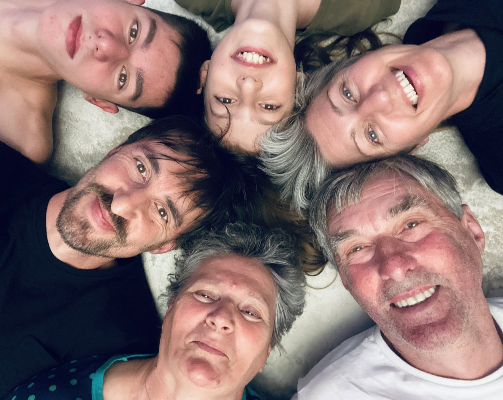

A
Acquire
Support students to organize pieces of information into sets of ideas: concepts, attributes, definitions and perspectives.

I am Mihai Catrinar. For 18 years, across International Baccalaureate (IB) schools on three continents, I have been designing experiences that build capabilities people can transfer to life: as a school leader, learning designer, Physical and Health Education specialist, professional learning coach and lifelong adventurer.
The question behind everything I do: how do we design experiences that build capabilities people can transfer to life?
For students, for teachers, and for myself. Always learning, always moving.

Part teacher, part coach, part explorer. I learn by the sea, I train on the trails, and I bring it all back to the classroom.
I am a Romanian-born educator with 18 years of international experience across the Middle East, South-East Asia and Europe, working at the intersection of school leadership, learning design, professional learning, movement and experiential education. I believe learning becomes powerful when people can use it beyond the place where they learned it.
As a Learning that Transfers endorsed educator, I work alongside author and global consultant Julie Stern at Education to Change the World, where we co-designed the Physical Education online course and certified over 100 physical educators worldwide. Beyond the classroom, I explore the same ideas through Outdoor Joy, using movement, challenge, nature, reflection and connection as tools for learning and human development.
Middle Years Programme (MYP) Assistant Head and Physical and Health Education (PHE) Teacher, Albanian College Tirana
Professional Learning Coach and Facilitator at Education to Change the World, alongside Julie Stern
Leading Learning, Harvard Business School Online; MA in Technology, Education and Learning, University of Leeds; BA, National University of Physical Education and Sports, Bucharest
Romanian, English, French
Award for the Best Work of Educational Innovation and Best Educational Practice in the Early Ages: mobile technology in Physical Education
Learning that Transfers endorsed educator; IB workshop leader, webinar presenter and AUSTSWIM Swimming Instructor
Years in international education
Educators certified worldwide
Continents called home
What is worth learning in Physical Education? I plan learning around the ACT model created by Julie Stern, Kayla Duncan and Trevor Aleo, so understanding transfers into real life.
Support students to organize pieces of information into sets of ideas: concepts, attributes, definitions and perspectives.
Build understanding of conceptual relationships, using thinking skills and applying them beyond the school context.
Carry new understanding into real-life situations, from similar to dissimilar contexts, ending in meaningful student action.


Three regions, one mission: better learners and better humans.
Middle Years Programme (MYP) Assistant Head and Physical and Health Education (PHE) Teacher: leading secondary school operations, coaching teachers, designing Advisory and PHE learning for Grades 6 to 10, and coordinating international field trips.
Professional Learning Coach and Facilitator alongside Julie Stern: co-designed the Physical Education online course, certified over 100 physical educators worldwide, and coached schools in the Acquire, Connect, Transfer (ACT) framework.
Physical and Health Education Coordinator from Early Years to MYP: designed the academy's PE curriculum and blended learning approach, and led the sports programme and wellbeing initiatives.
Physical Education teacher: coached cross-country, basketball and senior swimming strength training, presented at PYP Connect Singapore, and researched student fitness app use for my master's.
Physical Education teacher: pioneered digital technology in Early Years PE, earning the award for educational innovation, and presented at Qatar's Teaching and Learning Forum.
Physical Education teacher: adapted the Canadian PE curriculum, coached the football and basketball teams, and opened the international chapter of my career.
Sharing conceptual learning, well-being and movement with educators around the world.
Hosted by 4 Generations 4 Education. A grade 5 Invasion Games storyboard built on the ACT model, human agency theory and Minute to Win It activities delivered together with my kids.
Watch the recordingTwo sessions at the Toddle TIES Conference: how well-being impacts the world around us, self-efficacy and identity-based habits, plus a job-alike on the story your course tells.
Read about the sessionsMaking Physical Education come alive in remote learning: planning units and learning experiences that prioritise student understanding, with real classroom examples.
See the talk

A selection of published articles and my ongoing writing on learning that transfers.
To achieve something you must first believe in yourself.
At the end of each year my students fill the whiteboard with what they will never forget about their learning. Take risks, believe in yourself, learning is forever. This board is the real measure of my work.

Postcards from the water, the trails, the mountains and the family table.




385 metres abseiled into the void in Oman: read the Flight 385 story. Fitness is a family value: watch my daughter's channel and my son's channel.
Want me to speak at your school, run a workshop or support your curriculum team? Send me a message on LinkedIn with a short note about your school, your audience and the dates you have in mind.